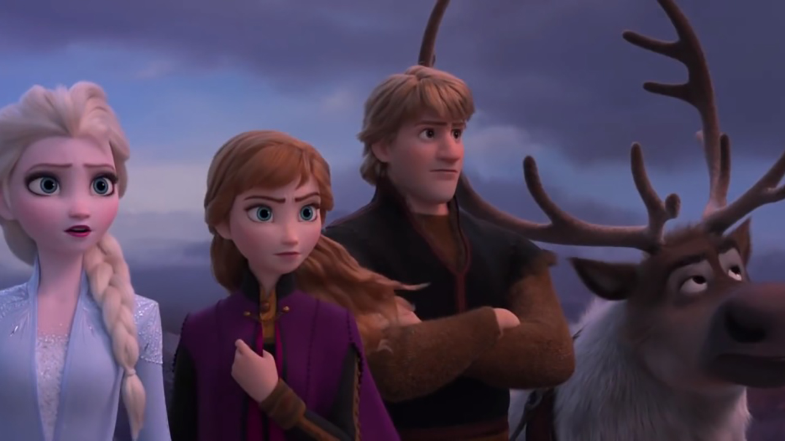

About Elsa
Elsa is an Ice Slinging Maniac and has absolutely zero self control. She almost killed her sister and all of Arendelle. She now remains is position of the Queen and is currently planning her next attack.
Elsa and her best buds
Elsa's Characteristics
- She's got ice powers
- She is super duper cool
- She is planning to attack the city again in Frozen 2
Elsa's Buds
Elsa has friends but she likes to call them her buds. Elsa and her buds like to play with ice because they think it's fun. Even though she tried to kill her, Anna is still her bud. Click on the links below to learn about Elsa's buds: